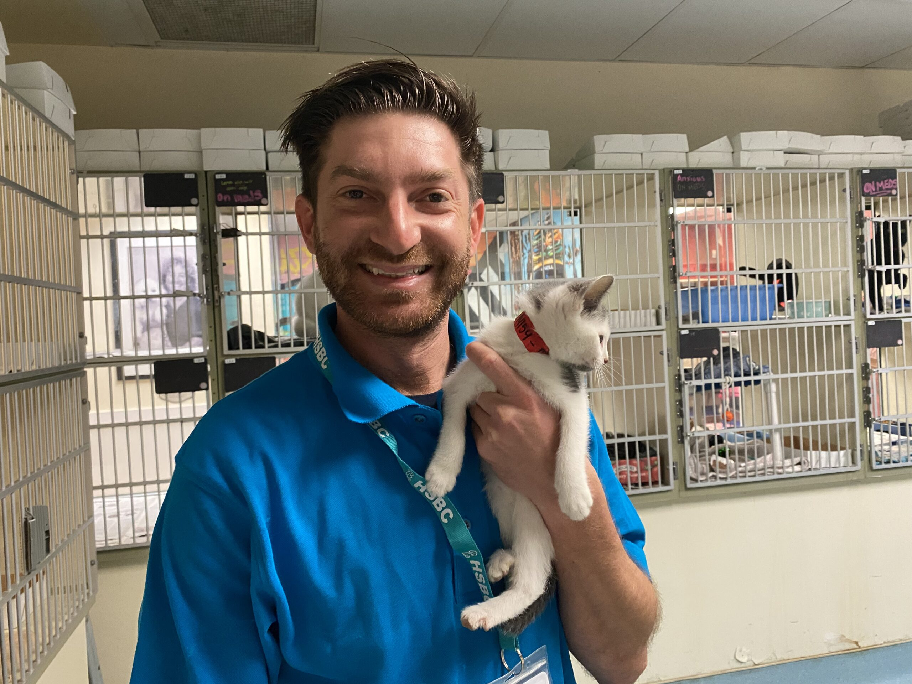
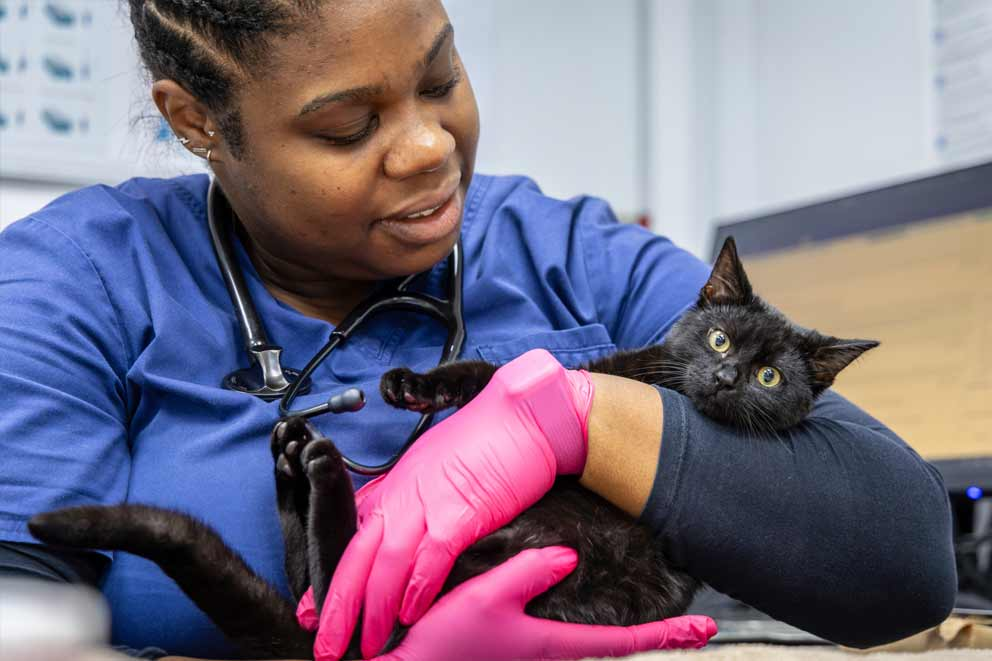
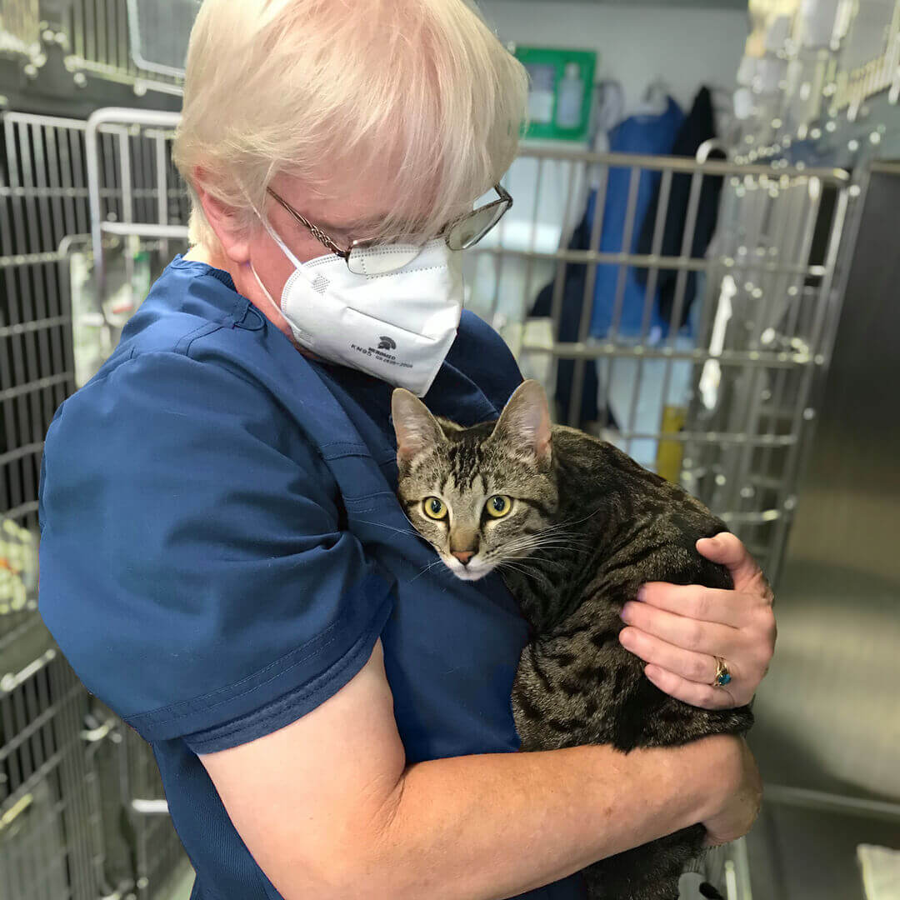
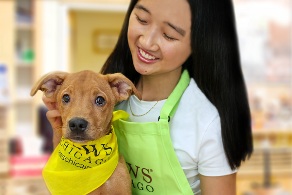
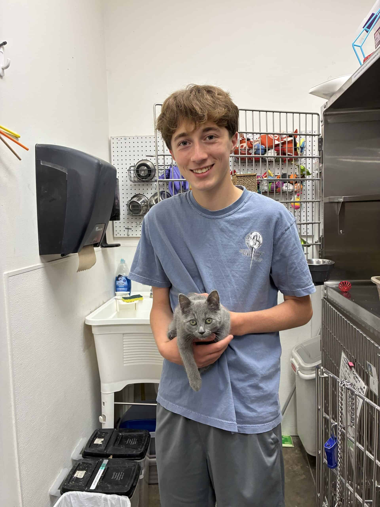

The Pet Adoption Center is a non-profit organization dedicated to rescuing and rehoming pets in need. Our mission is to provide a safe and loving environment for animals while connecting them with caring families. We believe that every pet deserves a second chance at life, and we work tirelessly to ensure that our animals find their forever homes.
Our team of passionate volunteers and staff members are committed to providing the best care for our animals, including medical treatment, socialization, and training. We also offer educational programs to raise awareness about responsible pet ownership and the importance of adoption.
Thank you for supporting our mission and helping us make a difference in the lives of countless pets. Together, we can create a brighter future for our furry friends!
Pets Adopted
Active Volunteers
Animals Rescued
Our dedicated team of volunteers and staff members are passionate about animal welfare and committed to making a positive impact in the lives of pets in need.

Founder & Director

Animal Care Specialist

Animal Care Specialist

Volunteer

Volunteer
Kılavuzlar, 78100 Karabük Merkez/Karabük